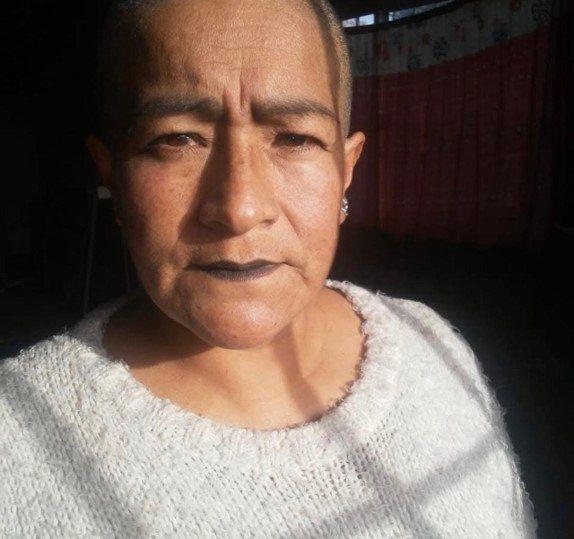

"Sanar lo que está roto con amor no solo repara, sino que crea una historia más fuerte y hermosa."

Equipo Kintsugi Munay
¿Quienes somos?
Hola antes de presentarnos queremos presentar a la persona que nos inspiró a llevar adelante esta acción, ella es el corazón del proyecto.
María Elena: el corazón del proyecto
Maria se mudo al Barrio de Los Naranjitos en el año 2000. Luego en el año 2013 convirtió su hogar en el merendero "Bocadito de Amor". Su generosidad brinda refugio a niños cuyos padres trabajan.

Equipo Kintsugi Munay
Somos un equipo de estudiantes del curso de Liderazgo y Desarrollo Humano de la academia Portal Maestro. Buscamos apoyar proyectos comunitarios y generar impacto positivo.
¿Donde estamos?
El Barrio Los Naranjitos
Ubicado a 50km de CABA, es un oasis de familias donde los niños crecen en comunidad.
Nacido de familias trabajadoras, hoy necesita espacios seguros para el desarrollo de los jóvenes.
¿Que hacemos?
La fundación se dedica a tres actividades:
Servicio de merienda diaria para más de 120 chicos.
Apoyo escolar y formación.
Contención y cuidado.
Esta labor permite que los niños puedan seguir sus sueños.
¿Que queremos lograr?
Nuestro sueño es seguir creciendo y ayudar a más personas cada día.
¿Como lo haremos?
Acondicionando los espacios: baños, paredes y pisos.
Terminación de pisos
Instalación sanitaria
Pintura
Instalaciones eléctricas
¿Como nos puedes ayudar?
Si este proyecto te motiva, podés colaborar con donaciones o materiales.